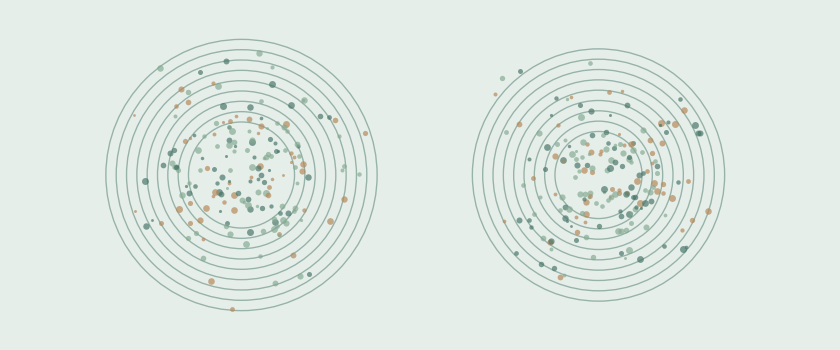

Somadutta Bhatta
I study how quark–gluon plasma expands and what heavy-ion collisions reveal about the shapes of nuclei.

Postdoctoral researcherUtrecht University & Nikhef
ALICE experiment at the LHCGet in touch →
ALICE experiment at the LHCGet in touch →
How do we know radial flow is collective?
Particles far apart in a lead–lead collision carry the imprint of the same outward push. We tested that connection through the momentum, rapidity and centrality dependence of the signal.
Explore the measurement →Lead analyzer · PRL Editors’ Suggestion
Selected research
All 13 studies →
How can a collision reveal the shape of uranium?

What changes in the most head-on lead collisions?
Does the outward push fluctuate coherently across rapidity?
At Utrecht and Nikhef, I’m studying how radial-flow fluctuations vary along the beam direction in heavy-ion collisions.